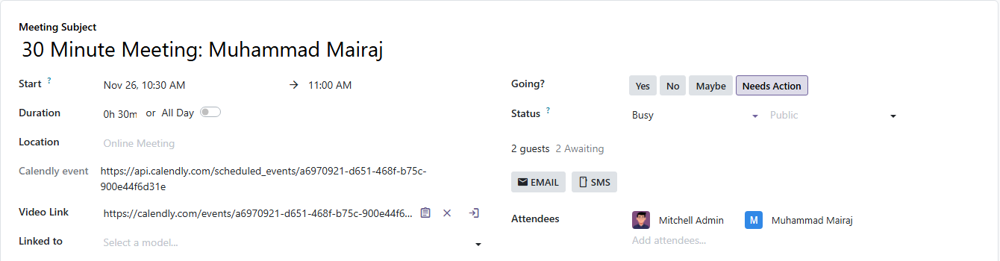
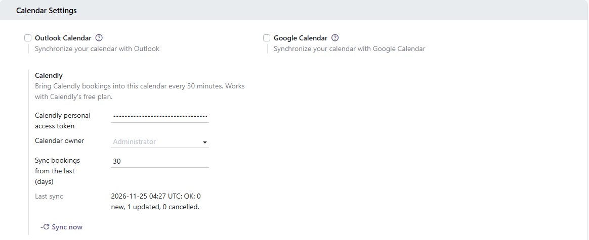

Every Calendly booking lands in your Odoo Calendar, with the invitee as a contact and the meeting link ready to join

What it does
New bookings become calendar events: the event type and invitee name as the title, the right start and end time, and the owner you choose as organizer.
Invitees become contacts. An existing contact with the same email is reused, so you don't get duplicates.
The meeting link (Google Meet, Zoom, Teams) goes into Video Link, so Odoo's Join button works. Addresses and phone numbers go into Location.
Answers to your booking questions are saved in the event's Description.
Rescheduled bookings move in Odoo too, and cancelled bookings are archived.
No emails from Odoo. Calendly already emails your invitees, so Odoo stays quiet.
Setup in two minutes
In Calendly, open Integrations > API and webhooks (or calendly.com/integrations/api_webhooks) and generate a personal access token.
In Odoo, open Settings > Calendar > Calendly, paste the token, pick the calendar owner, and click Sync now.
After that, bookings sync every 30 minutes by themselves. The settings show the result of the last sync.

Good to know
Works with Calendly's free plan. It reads bookings through the Calendly API on a schedule, so it doesn't need webhooks, which Calendly only offers on paid plans.
It only reads from Calendly. It never changes or cancels anything there.
The token is stored in Odoo's system parameters and only administrators can see the setting.
Runs on Odoo.sh and self-hosted Odoo. Odoo Online does not allow third-party modules.
Calendly is a trademark of Calendly LLC. This module is not made by or affiliated with Calendly.